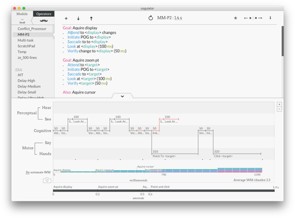
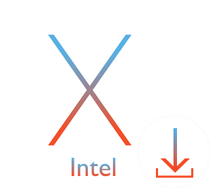
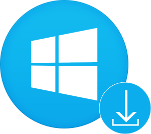

Cogulator is a simple human performance calculator developed by MITRE for estimating task time and difficulty (i.e., workload).
Download Cogulator ↗ Read the primer →
If you’re ready to start modeling, getting Cogulator installed on a Mac Silicon, Mac Intel, or PC is easy.


Cogulator is provided gratis under an Apache 2.0 license. Feel free to look under the hood. If you’d like to contribute to the project, create a pull request. Cogulator is built using HTML, CSS, Javascript, and Electron.
Let us know if you run into any bugs. For more general questions, feel free to get in touch with the project lead, Steven Estes, at sestes@mitre.org
Cogulator was developed by the MITRE Corporation. We’ve had fantastic contributions from Prairie Rose Goodwin and Nischal Shrestha of NC State, and from Bob Marinier, Kyle Aron, and Jack Zaientz at SoarTech.